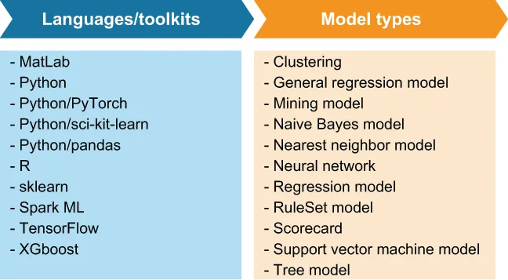

Just like most data science teams, the data science team at GottaEat uses a variety of languages and frameworks to develop their ML models. One of the biggest challenges is finding a single execution framework that supports the models developed in different languages.
就像大多数数据科学团队一样，GottaEat 的数据科学团队也使用各种各样的语言和框架来开发自己的 ML 模型。其中最大的挑战之一，是找到一个能够支持用不同语言开发出来的模型的统一执行框架。
Fortunately, there several projects seeking to standardize ML model formats to support separate languages for model training and deployment. Projects such as the Predictive Model Markup Language (PMML) allow data scientists and engineers to export ML models developed from a variety of languages into a language-neutral XML format.
所幸，已有若干项目在寻求把 ML 模型格式标准化，以支持用不同的语言来做模型训练与部署。诸如预测模型标记语言（Predictive Model Markup Language，PMML）这样的项目，让数据科学家和工程师能够把用各种语言开发出来的 ML 模型，导出成一种语言中立的 XML 格式。

Figure 11.5 A list of programming languages, toolkits, and ML model types supported by the PMML. Any supported models developed in these languages can be exported to PMML and executed inside a Pulsar function.
图 11.5 PMML 所支持的编程语言、工具包和 ML 模型类型一览。用这些语言开发出来的任何受支持模型，都可以被导出为 PMML，并在一个 Pulsar 函数内部执行。
As you can see from figure 11.5, the PMML format can be used to represent models developed in a variety of ML languages. Consequently, this approach can be used on any of the supported model types developed in one of the supported languages and/or frameworks.
从图 11.5 中可以看到，PMML 格式可以被用来表示用多种 ML 语言开发出来的模型。因此，这种做法可以适用于任何一种用受支持的语言和/或框架开发出来的受支持模型类型。
In the case of the delivery time estimation model, the data science team used the R programming language to develop and train this model. However, since there isn’t direct support for running R code inside Pulsar Functions, the data science team must first translate their R-based ML model into the PMML format, which can easily be accomplished using the r2pmml toolkit, as shown in the following listing.
就送达时间预估模型而言，数据科学团队用的是 R 语言来开发和训练这个模型。然而，由于在 Pulsar Functions 内部并没有对运行 R 代码的直接支持，数据科学团队必须先把他们那个基于 R 的 ML 模型转换成 PMML 格式——这用 r2pmml 工具包就能轻松完成，如下面这份清单所示。
Listing 11.1 Exporting an R-based model to PMML
// Model development code
dte <-(distance ~ ., data = df) ❶
library(r2pmml) ❷
r2pmml(dte, "delivery-time-estimation.pmml"); ❸
❶ Finalize the development of the ML model.
❶ 完成这个 ML 模型的开发。
❷ Import the library that translates the R model into PMML.
❷ 导入那个把 R 模型转换为 PMML 的库。
❸ Perform the translation from R to PMML.
❸ 执行从 R 到 PMML 的转换。
The r2pmml library does a direct translation of the R-based model object into the PMML format and saves it to a local file named delivery-time-estimation.pmml. The PMML file format specifies the data fields to use for the model, the type of calculation to perform (regression), and the structure of the model. In this case, the structure of the model is a set of coefficients, which is defined as shown in the following listing. We now have a model specification that we are ready to productize and apply to our production data set to generate delivery time predictions.
r2pmml 库会把那个基于 R 的模型对象直接转换成 PMML 格式，并把它保存到一个名为 delivery-time-estimation.pmml 的本地文件中。PMML 文件格式规定了该模型所要使用的数据字段、要执行的计算类型（回归），以及该模型的结构。在这里，模型的结构就是一组系数，其定义如下面这份清单所示。至此我们就有了一份模型规格说明，可以将其产品化，并应用到我们的生产数据集上，以生成送达时间预测了。
Listing 11.2 The delivery time estimation model in PMML format
<?xml version="1.0" encoding="UTF-8" standalone="yes"?>
<PMML version="4.2" xmlns="http://www.dmg.org/PMML-4_2">
<Header description="deliver time estimation">
<Application name="R" version="4.0.3"/>
<Timestamp>2021-01-18T15:37:26</Timestamp>
</Header>
<DataDictionary numberOfFields="4">
<DataField name="distance" optype="continuous" dataType="double"/>
<DataField name="prep_last_hour" optype="continuous"
dataType="double"/>
<DataField name="prep_last_7" optype="continuous" dataType="double"/>
...
</DataDictionary>
<RegressionModel functionName="regression">
<MiningSchema>
<MiningField name="distance"/>
...
</MiningSchema>
...
<NumericPredicitor name="travelTime" coefficient="7.6683E-4"/>
<NumericPredicitor name="avgPreptime" coefficient="-2.0459"/>
<NumericPredicitor name="avgDeliveryTime" coefficient="9.4778E-5"/>
..
</RegressionModel>
</PMML>
Once the trained model has been exported to PMML, a copy of it should be published to the Pulsar state store so the Pulsar Function can access it at runtime. This can be accomplished by using the pulsar-admin putstate command, as shown in listing 11.3, which uploads the given file to a specified namespace inside Pulsar’s state store. It is critically important that the namespace be the same as the one you will use to deploy the Pulsar function that will be using the model in order for it to have read access to the PMML file.
一旦这个训练好的模型被导出成了 PMML，就应当把它的一份副本发布到 Pulsar 的状态存储中，这样那个 Pulsar Function 才能在运行时访问到它。这可以用 pulsar-admin 的 putstate 命令来完成，如清单 11.3 所示——该命令会把给定文件上传到 Pulsar 状态存储内的一个指定命名空间中。至关重要的一点是：这个命名空间必须与你稍后用来部署那个将使用该模型的 Pulsar 函数所用的命名空间相同，这样该函数才拥有对这个 PMML 文件的读访问权限。
Listing 11.3 Upload machine learning model to Pulsar’s state store
./bin/pulsar-admin functions putstate \ ❶
--name MyMLEnabledFunction \
--namespace MyNamespace \
--tenant MyTenant \ ❷
--state "{\"key\":\"ML-Model\",
\"byteValue\": <contents of delivery-time-estimation.pmml >}" ❸
❶ Using the pulsar-admin CLI tool to upload the PMML file
❶ 使用 pulsar-admin 这个 CLI 工具来上传 PMML 文件。
❷ You need to specify the correct tenant, namespace, and function name.
❷ 你需要指定正确的租户、命名空间和函数名。
❸ Upload the contents of the generated PMML file.
❸ 上传那个已生成的 PMML 文件的内容。
Having the ability to automatically push model changes to production fits nicely within the emerging field of machine learning operations (ML ops), which applies the agile principles of continuous integration, delivery, and deployment to the ML process to accelerate and simplify ML model deployment. In this case, we use a script or CI/CD pipeline tool to check out the latest version of a model from source control and upload it to Pulsar using a simple shell script. Additionally, ancillary jobs can be scheduled to rotate different versions of the same model automatically based on a factor such as the time of day.
能够把模型的变更自动推送到生产环境，这一点很好地契合了正在兴起的一个领域——机器学习运维（ML ops）。它把持续集成、持续交付和持续部署这些敏捷原则应用到 ML 流程中，以加速并简化 ML 模型的部署。在这个案例中，我们用一个脚本或 CI/CD 流水线工具，从源代码控制中检出某个模型的最新版本，再用一段简单的 shell 脚本把它上传到 Pulsar。此外，还可以安排一些辅助作业，依据诸如一天中的时刻这样的因素，自动轮换同一个模型的不同版本。